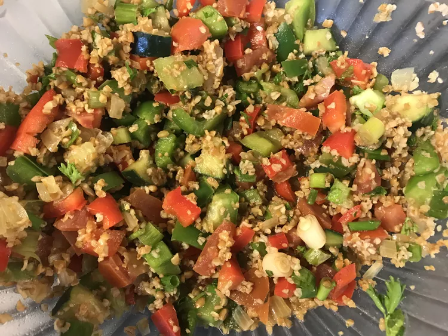

Potluck Recipes

Description
I got this bulgur salad recipe from a friend, it
is a very popular Turkish/Middle Eastern salad.
Ingredients
- 1 cup fine bulgur
- 1 cup boiling water
- 2 tablespoons olive oil
- 1 onion, finely chopped
- 2 large tomatoes, finely chopped
- 1 cucumber, diced
- 2 green bell peppers, finely chopped
- 1 red bell pepper, finely chopped
- 7 green onions, finely chopped
- ½ cup minced fresh parsley
- ½ cup minced fresh mint leaves
- 1 teaspoon red pepper flakes, or to taste
- 2 tablespoons olive oil
- juice of 1 fresh lemon
- 2 tablespoons pomegranate molasses
Recipe
- Place bulgur in a bowl; stir in boiling water. Cover and let stand for 20 minutes.
- Meanwhile, heat 2 tablespoons olive oil in a skillet over medium heat. Stir in chopped onion; cook and stir until onion has softened and turned translucent, about 5 minutes.
- Drain bulgur and return it to the bowl. Add cooked onion, chopped tomatoes, cucumber, green and red bell peppers, green onions, parsley, mint, and red pepper flakes.
- Drizzle with 2 tablespoons olive oil, lemon juice, and pomegranate molasses.
- Toss gently until the salad is thoroughly combined.
- Serve immediately, or refrigerate until serving.